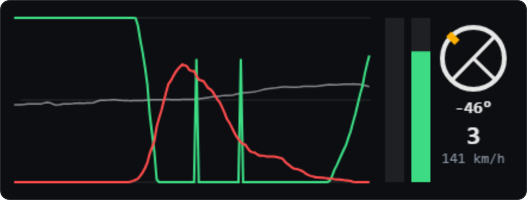
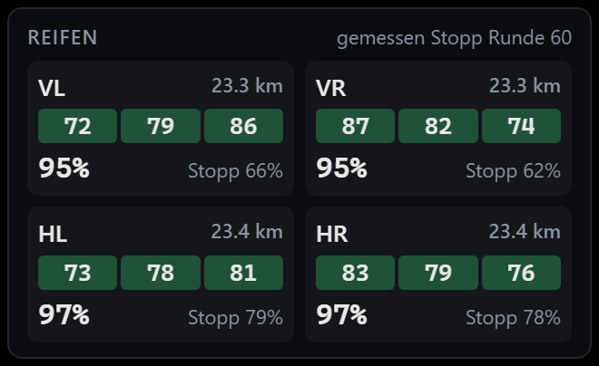
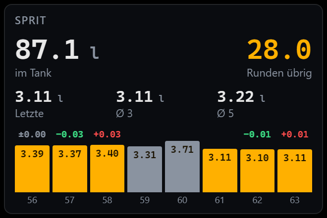

Eingaben live
Lenkwinkel, Gas und Bremse als laufender Verlauf der letzten fünf Sekunden – dazu Gang und Geschwindigkeit. Du siehst, wie früh gebremst und wie sauber rausbeschleunigt wird.
StintView · Team-Telemetrie
StintView zeigt dem ganzen Team von Outcast Endurance live Lenkung, Pedale, Spritverbrauch und Reifen des Fahrers, der gerade im Auto sitzt. Als Overlay über iRacing – am Monitor oder in VR.



Race together. Outperform. Never belong.
Funktionen
Wenn du deinem Teamkollegen im Langstreckenrennen zusiehst, siehst du Position und Rundenzeiten. StintView ergänzt genau das, was fehlt.
Lenkwinkel, Gas und Bremse als laufender Verlauf der letzten fünf Sekunden – dazu Gang und Geschwindigkeit. Du siehst, wie früh gebremst und wie sauber rausbeschleunigt wird.
Tankinhalt, Runden bis leer und der Verbrauch der letzten Runde sowie im Schnitt über 3 und 5 Runden. Boxenstopp-Runden werden automatisch herausgerechnet.
Karkasstemperatur innen, Mitte, außen und Verschleiß jedes Rads, dazu die Kilometer auf dem Satz und eine Schätzung, wie viel Profil jetzt noch übrig ist.
iRacing misst Temperatur und Verschleiß nur beim Stopp in der Box. Die Live-Werte vom Dashboard gibt iRacing nicht an andere Programme heraus.
Ablauf
Jedes Teammitglied lässt StintView im Hintergrund laufen. Wer sich ins Auto setzt, wird automatisch zur Quelle – ohne Umschalten, ohne Absprache.
Liest die Telemetrie direkt aus iRacing und sendet sie – aber nur, solange du selbst im Auto sitzt.
Verbindet das Team über das Internet. Beitritt mit Einladungscode – läuft beim Teamchef.
Zeigt die Daten des aktuellen Fahrers über iRacing an – als durchsichtiges Fenster am Monitor oder als Panels in SteamVR.
Download
Die ZIP enthält alles für Recorder, Overlay und Server. Einrichtung in etwa 15 Minuten – Schritt für Schritt in der Anleitung unten. Server-Adresse und Einladungscode bekommst du vom Teamchef.
Anleitung